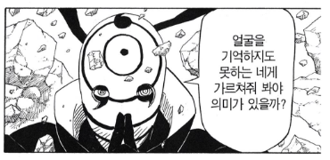
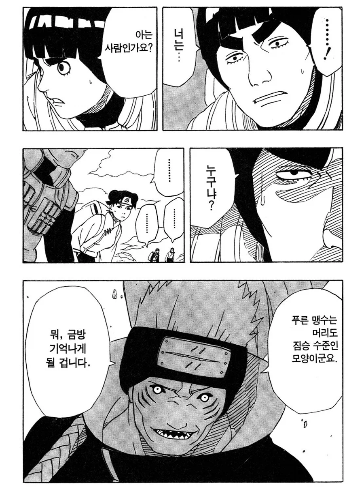
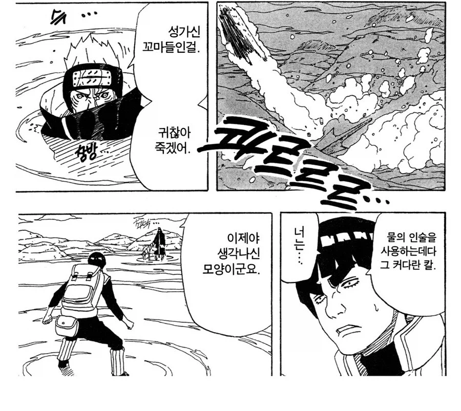
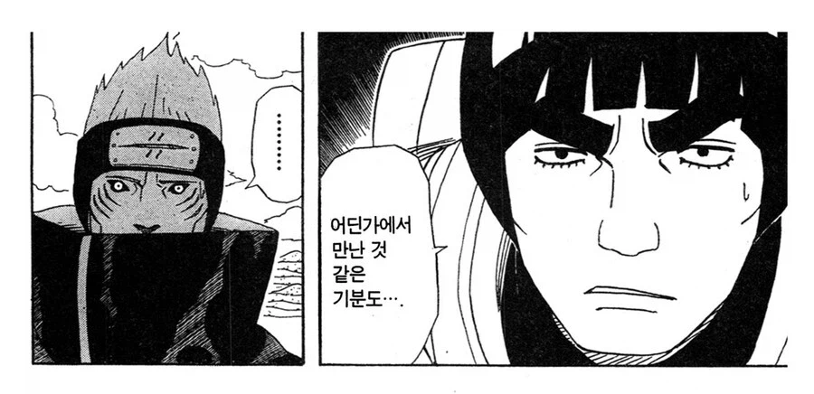
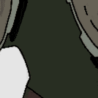

안면인식 장애가 심각해서 알려줘도 못알아볼거 같음




안면인식 장애가 심각해서 알려줘도 못알아볼거 같음
육문이 키사메인데 키사메보다 토비가 더쎈데
밑에 키사메짤보고 말한거라
죽어라 안면장애인!
가이는 좆밥 찌끄레기는 일일히 기억 안하더라

마이트가이랑 오비토랑 나뭇잎 동기였나
카카시랑 가이가 동기니깐 당연히 쟤도 동기겠지
나루토는 저런 개그가 웃기더라ㅋㅋ
발만 보고 싸우면 된다고
안면장애 vs 안면인식장애
그야 진짜로 얼굴을 본 적이 없으니까 ㅋㅋ
얘는 나중에 마다라도 기억 잘 못해
이거 음해 아니냐 ?? 가면벗고 바로 오비토인줄 알아본거같은데 가이햄이 친구 얼굴은 기억하제...
키사메… 우린 ㅈ됐다
머라구여??
이타치 사륜안 상대하느라 발만보고 싸움
발을 보여주면 알아볼지도
좆밥이라서 기억못한거지
좆밥 악당 키사메는 기억 안하지만
찐친 카카시의 사륜안을 누가 준건지는 기억하지 ㅋㅋㅋ
좆밥 악당 키사메지만 이타치 동술회피 때문에 얼굴 발만 보고 싸웠으니 ㄹㅇ 얼굴 못 봄
아 맞네ㅋㅋㅋㅋㅋㅋㅋㅋ
맞네 얼굴안보고 싸웠네 ㅋㅋㅋ
육문이면 떡을치겠군
이새끼 후속작에서 마다라도 까먹었더라
육문이면 떡을칠만한 좆밥이라는거 정도말곤 모를듯